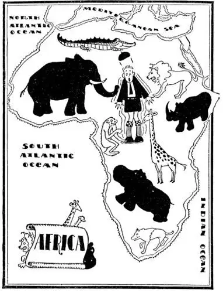
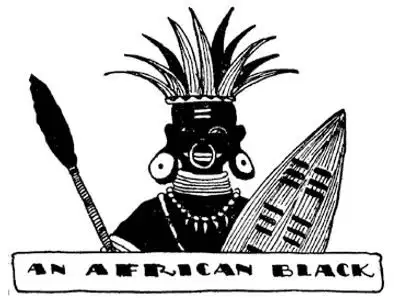

63
Zoo Land
动物王国

HAVE you ever been to the ZOO or the circus? HOW would you like to live in a ZOO where the animals were not in cages? The land in Africa on each side of the Equator is like that. A great many of the animals are dangerous, yet some are not.
A lion is a huge cat. but he is the wildest kind of a wild cat. He is the most terrifying of all wild animals—his roar is enough to “freeze the narrow in your bones.” even if he happens to be behind bars in the zoo. No wonder he is feared by all animals and fears none. Other animals have always to be on the watch against enemies, but the lion can lie down and go to sleep without watching or worrying or caring about enemies.
My father used to say if you wanted to catch a bird alive the thing to do is to put a little salt on his tail. But you can’t catch lions that way and you can’t catch birds that way either. If a hunter wishes to catch a lion alive for the zoo or circus, he must catch him in a trap called a snare, which is a pit dug in the ground and covered over with branches and twigs. The lion falls into it and then must be caught with a very strong net. If, however, a hunter wishes to kill thelion. he hides near a water-hole and waits until the lion comes for a drink, or else the hunter kills some harmless animal as you might dig worms for bait to catch fish and places him in the lion’s path. One of the animals used for bait is a zebra—a poor, harmless animal that looks like a little pony with stripes. Nature has given the zebra stripes that look like the shadows of tall grass so that he cannot easily be seen. Other animals looking for food will come along too and must be scared away from the bait or killed. The first animal to come along is usually the hyena. The hyena is an animal with a peculiar screech that sounds like a laugh. But he laughs when he is mad, not when he is glad. He is too much of a coward to kill live animals. so he waits until he can find one dead. He is the most cowardly animal in the jungle.
In the jungle every animal must either fight, run away, or be killed; there are no policemen to look out for him.
The bravest animal in the jungle, strange to say, is not the lion—he doesn’t have to be; the monkey is the bravest.
When a lion’s roar shakes the jungle all the animals start on the runaway from him, but the last to run away are the monkeys. When a hunter who is hiding and waiting for a lion to come along sees the hyena pass by, he knows the lion is far behind, for the hyena is the first to run away; but when at last, after all the other animals have passed by fleeing, the monkeys come along, the hunter knows the lion is close behind. A hunter will not shoot a monkey if he can help it—he looks so much like a child. He will cry like a child when hurt, and if shot try to pull the bullet out with his hands, and that’s more than even hunters can stand.

Some animals will not eat meat—only growing things. The giraffe, the animal with a long neck and still longer legs, doesn’t eat meat. He eats only what he can reach with his long neck—usually leaves and twigs of trees. When he wants to drink or to eat anything on the ground he must spread his legs apart like a letter “A” so that he can reach the water.
Almost every animal makes some kind of sound. It may be his language. He barks, moos, clucks, bleats, mews, whinnies, croaks, roars, grunts, cries, snarls, chirps, screeches, crows, hisses, whines, laughs, squeals, cackles, squawks, snorts, bellows, or sings. But the giraffe is said to be the only jungle animal that makes no sound.
In the rivers of the jungle lives a huge fat animal called a hippopotamus. Hippopotamus means a river horse, but he is really more like a huge fat pig. Like a pig, he loves to wallow in mud and water. When he lies asleep with perhaps only his back showing above the water he looks like a large rock or a submarine partly under the water. A magician once sold a secret for turning lead into gold. I will tell you the secret and won’t charge you anything for it. This is it. “Put the lead in a pot on the fire and stir it for half an hour while you do not once think of the word Hippopotamus.” If you can do that the lead will turn to gold. Do you think you could do that? Then you don’t know how hard it iS to try not to think of Hippopotamus. Here’s another good rule if you want to learn any hard name in geography: try not to think of it for half an hour.
Another big clumsy animal iS the Rhinoceros. He would take a prize in any Ugly Show. He has very short legs and one or two horns on his nose, and his skin is so thick that a hunter can’t shoot him except in the stomach, and he can’t shoot him there because his legs are so short his stomach is almost on the ground. When a person is so dumb that nothing we say seems to have any eftect on him or trouble him. we say he has a hide like a rhinoceros. I have a peculiar stick and I often ask people to guess what it is made of. They usually say “horn” or “hard rubber.” for it will bend. It is really made out of rhinoceros hide. The rhino has very poor eyesight. His little eyes can hardly see at all. He needs glasses. Instead of glasses he has a friend that does his seeing for him. This friend is a little bird called arhino bird that rides on his back, does his seeing for him, and warns him of any danger.
The elephant is another animal with bad eyesight. The elephants in Africa are bigger than those in India.
In India they hunt elephants to catch them alive.
In Africa they hunt elephants to kill them.
In India they catch elephants to tame them and put them to work.
In Africa they catch elephants for their tusks, which are teeth sometimes ten feet long. Just suppose you had two front teeth as long as that. These tusks are ivory and they make fine piano keys.
The ivory business is not, however, as good as it used to be—or as bad as it used to be for the elephants—for men have learned to make a kind of ivory out of cotton and other materials. This takes the place of ivory and comes in many forms called plastics. Plastics are much cheaper than ivory and in many cases much better. Ivory turns yellow and cracks as it gets old, but plastics do not.

非洲黑人
He thinks himself very stylish
他认为自己很时尚
But the most curious animals in Africa are the human animals—the Black People. They have very funny ideas about beauty, so we think. We have funny ideas, so they think. A white person is all faded out, pale, unhealthy, sickly looking. A black man is a rich, black, coal color. Our ladies wear rings in their ears. Their ladies wear rings in their noses, where they show better. Some hunters had a box of safety-pins. The Blacks begged for the pins, and when they were given to them they pinned them through their noses. An earring isn’t big enough for them. They make holes in their ears and holes in their lips and gradually work the holes large enough to put their whole hand through the hole. Then they put blocks of wood or something like that in the holes. Our ladies bob their hair. Their ladies arrange their hair in huge top knots and gum it up with blood.
Some white men were building a telegraph line in Africa, but as fast as they built it, the Blacks stole the wire to make bracelets, and they would completely cover their arms and legs with the wire. That showed how stylish they were and how smart and how wealthy.
You’ve probably heard of the little boy who was so sad that he went out into the garden and ate worms. Well, in some parts of Africa the people eat ants and grasshoppers, both raw and toasted, and they are not sad but glad. But there is one thing that both white and black people like—that is watermelon. Our watermelons first came from Africa.
The music the black people love best iS that made by beating on a kind of drum called a tom-tom. They beat it with their hands and fists and will keep it up for hours without stopping; the thump, thump, thump and boom, boom, boom seems to charm them. The sound can often be heard for miles, and they can send a sort of wireless message in this way across country to their neighbors. A little girl writing a composition on this subject said, “You can hear them beating on their tum-turns for miles!”
【中文阅读】
你去过动物园或马戏团吗？如果有个动物园，动物都不关在笼子里，你愿意住在里面吗？非洲赤道两侧的地带就像这样的动物园。许多动物都是危险的，而有些并不危险。
狮子是大型猫科动物，但它是野兽中最凶猛的。狮子是所有野生动物中最可怕的动物——即使它被关在动物园的笼子里，它的吼声也让你不寒而栗。难 怪，所有的动物都怕它，而它却不怕任何动物。别的动物不得不总是提防敌人，而狮子却能够躺下来呼呼大睡，不必提防、担心或在意什么敌人。
我小时候父亲常说，要想活捉一只鸟儿，最好的办法是在它的尾巴上撒一点盐。但是用这种方法，是抓不住狮子的，其实用这种方法也抓不住鸟儿。如果一个猎人想活捉一只狮子卖给动物园或马戏团，他就必须设圈套让它落入陷阱中，就是为捕捉野兽而挖的一个坑穴，上面浮盖着大小不等的树枝，狮子踩在上面就掉到坑里，这时必须用一张结实的网将它套住。然而，如果猎人想猎杀狮子，他就躲在池塘附近，等着狮子来饮水；或者，猎人猎杀某种温顺的动物，把它放在狮子必经之路上做诱饵，就像你挖虫子做钓鱼用的诱饵一样。用作诱饵的动物之一就是斑马——一种可怜、温顺的动物，样子像身上有条纹的小型马。大自然赋予斑马身上的条纹，看上去就像高高的草投下的影子，因此，它们就不容易被发现。其他寻找食物的动物也会出现，见到诱饵一定会被吓跑或被猎杀。最先出现的动物通常是鬣狗，这种动物会发出一种奇怪的尖叫声，听起来像笑声，但是只有在它们生气的时候，才会发出笑声，而不是在高兴的时候。鬣狗胆子极小，不敢捕食活的动物，所以它只有等待，等到死的动物出现。鬣狗是丛林中最胆小的动物。
丛林里，每一只动物都必须能搏斗，能逃跑，要不然就被别的动物撕咬而死。丛林中没有警察关照它们。
丛林里最勇敢的动物，说来也怪，并不是狮子——它不必勇敢。猴子才是最勇敢的。
当狮子的吼声威震丛林的时候，所有的动物就开始逃离，而最后逃走的却是猴子。当躲着等待狮子来临的猎人看见鬣狗走过，就知道狮子还在后面很远的地方，因为鬣狗总是第一个逃跑的。但是，当最后所有其他动物都匆匆逃离后，猴子才出现。这时，猎人就知道狮子就在后面很近的地方。猎人都尽量避免猎杀猴子——猴子看起来很像小孩。猴子受伤了，会像小孩一样哭起来；如果被子弹射中，它就设法用手将子弹拔出来。就连猎人也不忍心看到这种情景。
有些动物不吃肉——只吃地里长出的东西。长颈鹿——一种脖子很长、而腿更长的动物——就是其中一种。它只吃长脖子能够着的东西——通常是树叶和嫩枝。想喝水或吃地面上的东西时，长颈鹿就必须将腿像字母“A”一样张开，才能够得到水。
几乎所有的动物都会发出某种声音，那也许就是动物的语言。有的汪汪地叫，有的哞哞地叫，有的咯咯地叫，有的咩咩地叫，有的喵喵地叫，有的嘶叫， 有的呱呱地叫，有的吼叫，有的发呼噜声，有的嗷叫，有的露齿咆哮、有的吱吱喳喳地叫，有的尖叫，有的喔喔叫，有的发嘶嘶声，有的呜呜叫，有的发笑声，有的吱吱叫，有的咯咯叫，有的嘎嘎大叫，有的呼哧呼哧喷鼻息，有的怒吼，有的啼啭。但据说长颈鹿是丛林中唯一不发出声音的动物。
丛林的河流中生活着一种巨大、肥胖的动物叫河马。“河马”的意思是“河里的马”，但它更像一头巨大的肥猪。像猪一样，河马喜欢在泥水中打滚。河马睡着了的时候，只有背部露出水面，这时它看起来就像一块巨大的岩石，或者像没有完全浮出水面的潜艇。有一个魔术师曾经出售将铅变成金子的秘诀。我愿告诉你这个秘密，而不收取任何费用。这个秘密就是，“将铅放入炉上的一只锅里，搅动半个小时，在这期间一次都不要想‘河马’这个单词。”如果你能做到这一点，铅就会变成金子。你认为你能做到这一点吗？那么，你根本不知道，努力不去想“河马”有多难。如果你想记住地理书里什么较难的名字，这里有一个很好的规则，那就是：半个小时努力不去想它。
还有一种又大又笨拙的动物是犀牛。如果举行什么“选丑大赛”的话，犀牛一定会得奖。犀牛腿非常短，鼻子上长着一个或两个角，皮很厚，猎人只能射击它的肚子。向犀牛的肚子射击也不是件容易的事，因为它的腿太短了，它的肚子几乎就紧贴在地面上。如果一个人很愚钝，无论我们说什么，似乎都无法触动他或令他苦恼，我们就说他“皮厚得像犀牛皮”。我有一根奇特的棍子，我常常让人猜它是什么做的，一般都回答是用“动物角”或“硬橡胶”做的，因为它可以弯曲。其实它是用犀牛皮做的。犀牛的视力很差，它的小眼睛几乎什么都看不见，它需要一副眼镜。虽然犀牛没有眼镜，但有一位朋友替代它的眼镜。这位朋友是一只小鸟，叫“犀牛鸟”，它栖在犀牛背上，为犀牛瞭望，如果有什么危险，它就提醒犀牛。
大象是另一种视力较差的动物。非洲象比印度象大。
在印度，人们猎象是要活捉大象。
在非洲，人们猎象是要射杀大象。
在印度，人们捕住大象，是要驯化它们，让它们干活。
在非洲，人们捕住大象是为了获取象牙。有的象牙长达10英尺，假如你有两颗门牙，像象牙一样长，你打算怎么办？这些象牙可做成各种象牙制品，是做钢琴琴键的优质材料。
然而，象牙生意没有以前那么好了，——或是对大象来说，情况没有以前那么坏了——因为人们已经学会用棉花和其他材料来生产出一种人造象牙。这种材 料代替了真正的象牙，并有很多类型，都叫做“塑料”。塑料比象牙便宜多了，在很多情况下，比象牙更有用。象牙日子久了会变黄，还会开裂，然而塑料不会。
但是，非洲最好奇的动物是人这种动物——黑人。在我们看来，他们对美的看法非常古怪。在黑人眼里，白人的肤色都褪掉了、显得苍白、不健康，看上去像生了病；而黑人的肤色黑得很浓艳，像煤一样。白人女子戴耳环，而黑人女子戴鼻环，她们觉得鼻环更好看。有些猎人随身会带一盒安全别针。黑人向他们讨要别针，讨到后，就别在自己鼻子上。耳环在他们看来还不够大，他们在自己耳朵和嘴唇上打洞，渐渐地，这些洞越来越大，大得可以将整只手穿过去。然后，他们在洞里放上木块诸如此类的东西。白人女子将头发剪短；而黑人女子将头发盘成一个巨大的顶髻，还在上面涂满鲜血，将头发粘牢。
曾有一些白人男子在非洲安装一条电报线，但是，刚装好，黑人就偷走了电线。他们用电线做成手镯，而且在手臂和腿上挂满电线，以此来炫耀自己是多么时尚、多么聪明、多么富有。
你大概听说过有这样一个小男孩，他很伤心，竟然走进花园里吃虫子。对了，在非洲一些地方，人们吃蚂蚁和蚂蚱，既生吃，也烤着吃，而且，吃的时候，他们并不伤心而是很开心。但是有一件东西是白人和黑人都喜欢的——那就是西瓜。我们的西瓜最初就是来自非洲。
黑人最喜欢的音乐，是在一种手鼓上敲出的音乐。他们用手和拳敲打手鼓，一打就是打好几个小时，这种砰、砰、砰和嗵、嗵、嗵的声音似乎令他们陶醉。这手鼓声在数英里之外都能听到。黑人可以通过打手鼓向另一地区的邻居传送消息，类似无线电报。就这个主题，有个小女孩写了一篇作文，“在几英里外，你就能听到他们敲击自己肚子的声音 [1] 。